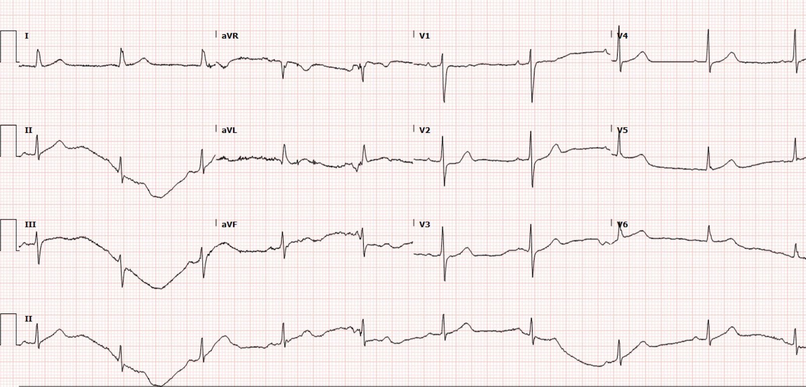
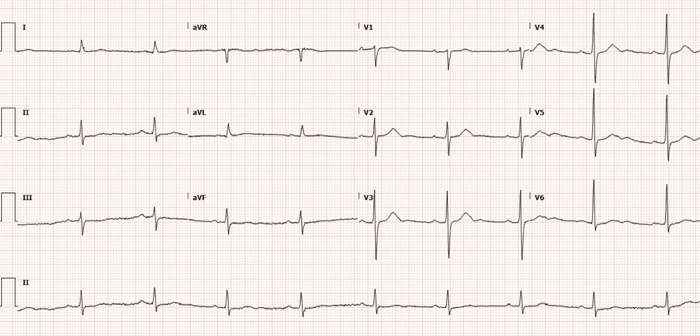
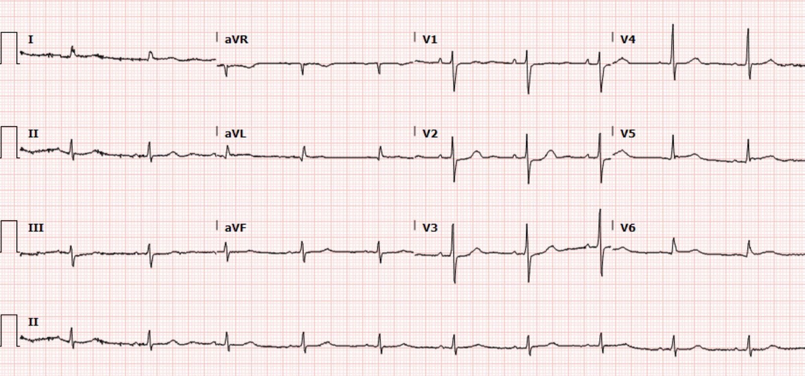
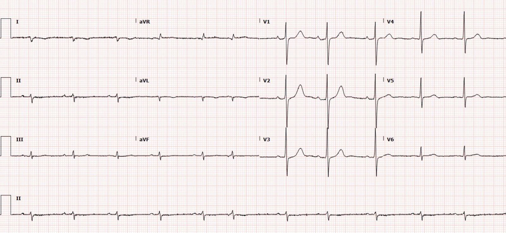
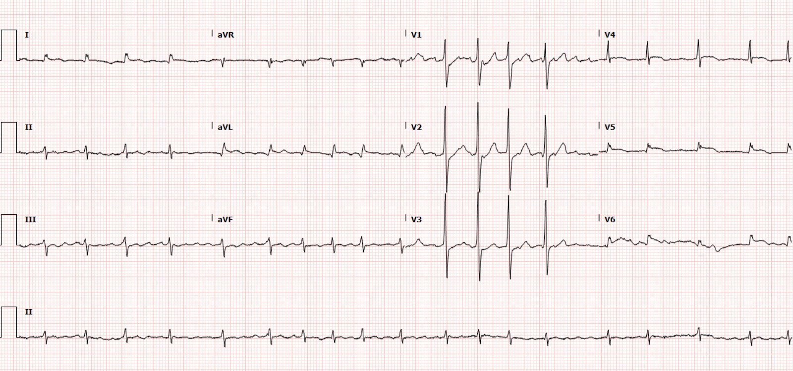
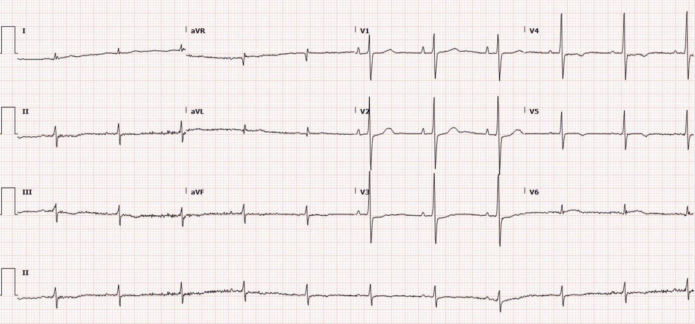
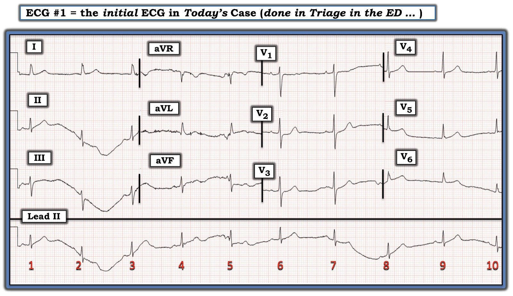
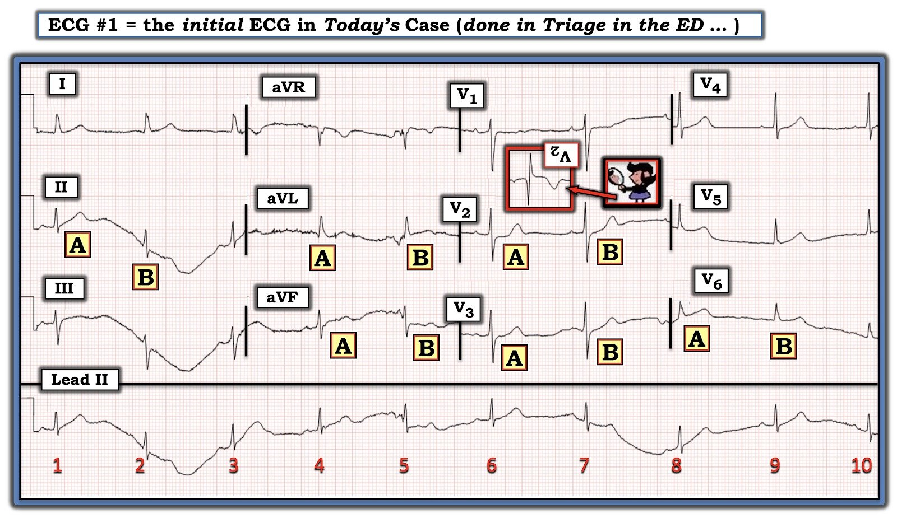

25/02/2022 — Bỏ sót các dấu hiệu OMI trên điện tâm đồ có liên quan đến tử vong sớm
Bản dịch tiếng Việt của bài "Missing ECG signs of OMI is associated with early death" – Dr. Smith’s ECG Blog. Giữ nguyên toàn bộ 10 hình ảnh của bản gốc.
Tác giả: Sean Trostel MD, có chỉnh sửa của Smith và Meyers
Một nam giới ngoài 80 tuổi, có tiền sử bệnh động mạch vành (CAD), nhồi máu cơ tim đã
PCI, tăng huyết áp (HTN), rối loạn lipid máu (HLD), AFib và suy tim phân suất tống máu giảm (HFrEF), đến viện vì đau ngực khởi phát đột ngột, đau âm ỉ,
ở giữa ngực, lan ra cánh tay trái, kèm khó thở; triệu chứng bắt đầu
vào buổi sáng, 1 giờ trước khi đến khoa cấp cứu (ED).
Đây là điện tâm đồ đầu tiên lúc phân loại (triage) của bệnh nhân, ghi một giờ sau khi khởi phát triệu chứng, và bên dưới là điện tâm đồ nền để so sánh:


Điện tâm đồ nền lưu trong hồ sơ:


Điện tâm đồ này được đọc là nhịp chậm xoang,
không có thay đổi ST hay sóng T cấp tính so với điện tâm đồ trước.
Mặc dù chất lượng rất kém và có trôi đường nền (và không có dấu hiệu nào cho thấy điện tâm đồ đã được ghi lại để có chất lượng tốt hơn), điện tâm đồ này vẫn có giá trị chẩn đoán. Có ST chênh xuống kín đáo ở các chuyển đạo
trước, rõ nhất ở V2, là dấu hiệu đặc hiệu cho OMI thành sau cấp trong bối cảnh hội chứng vành cấp (ACS) với phức bộ QRS bình thường (vốn không được có bất kỳ ST chênh xuống (STD) nào). Khi so với điện tâm đồ trước, sóng T ở các chuyển đạo bên đã tăng thể tích
so với QRS, gợi ý tổn thương thành bên; điều này một phần là do biên độ QRS giảm đi. Điện tâm đồ này có giá trị chẩn đoán OMI sau-bên cho đến khi chứng minh được
điều ngược lại.
Bệnh nhân được theo dõi tại khoa cấp cứu, được dùng
“thuốc giảm đau” không rõ loại, và được làm xét nghiệm. Troponin độ nhạy cao
ban đầu tăng tới 214 ng/L. Ba giờ sau, bệnh nhân vẫn tiếp tục đau
ngực, và một điện tâm đồ ghi lại được chỉ định:


Lúc này, bác sĩ cấp cứu đọc điện tâm đồ là
có thay đổi đoạn ST kín đáo ở các chuyển đạo bên mà chưa nhận thấy trên điện tâm đồ trước. Nhưng có vẻ như không có hành động nào được đưa ra dựa trên nhận định này.
Troponin được xét nghiệm lại và tăng lên 1174 ng/L.
Bệnh nhân được chuyển đến một trung tâm tuyến trên, nhưng phòng thông tim không
được kích hoạt vì ST chênh lên ở thành bên không đạt tiêu chuẩn STEMI. Cả
ghi chép của khoa cấp cứu lẫn của khoa tim mạch đều không hề nhắc đến ST chênh xuống ở các chuyển đạo
trước.
Bệnh nhân được bác sĩ tim mạch khám khi đến trung tâm
tuyến trên, lúc đó vẫn còn đau ngực. Bệnh nhân được chẩn đoán
nhồi máu cơ tim không ST chênh lên (NSTEMI) và được nhập viện để điều trị nội khoa và chụp mạch vành vào ngày
hôm sau.
Trong đêm, một điện tâm đồ theo dõi tiếp được ghi.


Bạn nghĩ gì?
Có phải bệnh nhân đã xuất hiện sóng Q và sóng T đảo ngược
ở các chuyển đạo bên cao?
Không, thay vào đó đây là hình ảnh kinh điển của đảo điện cực chi (đảo điện cực LA/RA). Tình trạng này làm đảo ngược chuyển đạo I, hoán đổi aVL với
aVR và II với III. Đồng thời, các thay đổi thiếu máu cục bộ trước đó của bệnh nhân đã
cải thiện. Ở các chuyển đạo trước, có thể thấy sóng T to ra, nhiều khả năng là
hình soi gương của sóng T đảo ngược ở các chuyển đạo phía sau, cho thấy đã có một mức độ
tái tưới máu nhất định ở cơ tim thành sau. Hiện tượng này được gọi là “sóng T tái tưới máu thành sau (posterior reperfusion T waves).”
Troponin xét nghiệm liên tiếp tiếp tục tăng suốt
đêm, lên 14.891 ng/L, rồi đạt đỉnh trên 25.000 ng/L vào thời điểm 12 giờ sau khi bệnh nhân khởi phát đau.
Bệnh nhân đã được thông tim trái
khoảng 24 giờ sau khi khởi phát đau, khi đó phát hiện một tổn thương 80% ở RCA đoạn
giữa và một chỗ tắc 100% ở đoạn gần nhánh bờ tù thứ nhất (OM1). Tổn thương RCA được xem là thủ phạm và được đặt stent, nhưng họ ghi rằng không có huyết khối và không mô tả chi tiết gì về tổn thương này trong báo cáo thông tim. Với chỗ tắc OM1, hoàn toàn không có chi tiết nào ngoài dòng “OM1: hẹp 100%.” Không có mô tả về việc có huyết khối hay không, không nhắc đến việc đó là tổn thương thủ phạm hay tổn thương mạn tính, không nhắc đến bất kỳ nỗ lực nào để đi qua tổn thương. Cũng không nhắc đến tuần hoàn bàng hệ tới vùng nào trong hai vùng này.
Sau PCI, siêu âm tim cho thấy vô động thành trước đoạn giữa và mỏm,
thành trước-bên, thành bên và thành dưới, với LVEF 35-40% và không có rối loạn chức năng thất
phải. Những thay đổi này là mới so với lần siêu âm tim trước. Tôi
nghi ngờ rằng chỗ tắc OM1 có thể mới là tổn thương thủ phạm thực sự, xét đến
thiếu máu cục bộ sau-bên trên điện tâm đồ, vô động ở vùng này và không có tổn thương thất phải
trên siêu âm tim.
Ngày hôm sau, bệnh nhân xuất hiện
AFib/cuồng nhĩ kèm đáp ứng thất nhanh (RVR), và điện tâm đồ sau đây được ghi.


Trên điện tâm đồ này có thể thấy ST chênh lên ở thành bên và ST chênh xuống ở các chuyển đạo trước của bệnh nhân tái xuất hiện và
nặng lên.
Điều này không có gì ngạc nhiên nếu OM1 là thủ phạm mà không được tái thông mạch, và giờ đây vùng này tăng nhu cầu do nhịp nhanh.
Cuối cùng bệnh nhân được xuất viện sau 3
ngày và tái khám tại phòng khám 1 tuần sau, khi đó điện tâm đồ sau đây
được ghi.


So với điện tâm đồ ban đầu của bệnh nhân,
điện tâm đồ nền mới đã xuất hiện sóng R lớn mới ở các chuyển đạo trước,
phù hợp với nhồi máu thành sau.
Đáng buồn là bệnh nhân này đã phải ra vào viện liên tục trong vài
tháng sau đó vì các đợt suy tim nặng lên, trước khi tử vong
vì chính bệnh này.
Những điểm cần học:
Đặc biệt nếu bạn không có kỹ năng đọc điện tâm đồ ở mức chuyên gia, đừng chấp nhận một điện tâm đồ có chất lượng kém như điện tâm đồ đầu tiên của ca này! Một người đọc ít kinh nghiệm hơn vẫn có thể đã nhận ra một số bất thường trên điện tâm đồ đầu tiên đó nếu nó có chất lượng tốt hơn.
ST chênh xuống ở bất kỳ biên độ nào,
tối đa ở V2-V4, ở bệnh nhân nghi hội chứng vành cấp và không có nguyên nhân nào khác dựa trên QRS gây ST chênh xuống, cần được xem là
OMI thành sau cho đến khi chứng minh được điều ngược lại.(1) Trong ca này, ST chênh xuống kín đáo, nhưng cuối cùng đã được chứng minh là có giá trị chẩn đoán OMI thành sau. Đây lại là
một ví dụ nữa về OMI STEMI âm tính (STEMI(-) OMI) bị chậm thông tim do
mô hình STEMI/NSTEMI hiện hành.
Thường rất khó xác định hay chứng minh động mạch thủ phạm, ngay cả khi có báo cáo chụp mạch vành. Báo cáo không cho thấy bằng chứng nào rằng OM1 thậm chí đã được cân nhắc là một tổn thương thủ phạm tiềm năng. Theo kinh nghiệm, chúng tôi gặp những vấn đề như vậy rất thường xuyên ở các ca NSTEMI được thông tim muộn. Một tổn thương thủ phạm cấp có thể rất rõ ràng lúc ban đầu thì 24 giờ sau có lẽ không còn rõ như vậy, và sai lầm này được tiếp tay bởi thiên kiến nhận thức rằng “dĩ nhiên không phải tắc hoàn toàn, đó không thể là thủ phạm cấp, vì bệnh nhân chỉ bị NSTEMI.”
Theo hướng dẫn AHA/ACC năm 2021,
NSTEMI kèm đau thắt ngực kháng trị hoặc mất ổn định huyết động hay mất ổn định
điện học là chỉ định thông tim ngay lập tức và có thể
PCI.(2) Bệnh nhân này lẽ ra đã được hưởng lợi từ việc kích hoạt phòng thông tim ngay khi
đến trung tâm tuyến trên với cơn đau ngực kiểu đau thắt ngực đang tiếp diễn và
troponin có xu hướng tăng, bất kể có hay không có thay đổi trên điện tâm đồ.
Nếu một điện tâm đồ cho thấy trục thay đổi đột ngột,
chuyển đạo I đảo ngược, aVR hoán đổi với aVL và II hoán đổi với
III, hãy kiểm tra đảo điện cực chi ở hai chi trên.
Nhồi máu thành sau cũ có thể được
nhận ra nhờ sóng R nổi bật ở V1-V3. Có thể xem các sóng R này là
hình soi gương của những sóng Q lẽ ra sẽ xuất hiện ở cơ tim thành sau. (3,4)
Non-STEMI là OMI có tỷ lệ tử vong 1 năm và 2 năm cao gấp đôi so với Non-STEMI là NOMI. (5)
Tài liệu tham khảo
1. Meyers HP, Bracey A, Lee D, Lichtenheld A, Li WJ, Singer DD,
Rollins Z, Kane JA, Dodd KW, Meyers KE, Shroff GR, Singer AJ, Smith SW.
Ischemic ST-Segment Depression Maximal in V1-V4 (Versus V5-V6) of Any
Amplitude Is Specific for Occlusion Myocardial Infarction (Versus
Nonocclusive Ischemia). Tạp chí J Am Heart Assoc. 2021 tháng Mười Hai, ngày 7;10(23):e022866. doi:
10.1161/JAHA.121.022866. Bản điện tử (Epub) ngày 15 tháng Mười Một năm 2021. PMID: 34775811.
2. Lawton J, Tamis-Holland J, Bangalore S, Bates E, Beckie T,
Bischoff J, Bittl J, Cohen M, DiMaio J, Don C, Fremes S, Gaudino M,
Goldberger Z, Grant M, Jaswal J, Kurlansky P, Mehran R, Metkus T, Nnacheta
L, Rao S, Sellke F, Sharma G, Yong C và Zwischenberger B (2021) 2021
ACC/AHA/SCAI Guideline for Coronary Artery Revascularization: Executive
Summary: A Report of the American College of Cardiology/American Heart
Association Joint Committee on Clinical Practice Guidelines, Tạp chí Circulation,
145:3, (e4-e17), ngày xuất bản trực tuyến: 18 tháng Một năm 2022.
3. Perloff JK. The Recognition of Strictly Posterior Myocardial
Infarction by Conventional Scalar Electrocardiography. Tạp chí Circulation. 1964
tháng Mười Một;30:706-18. doi: 10.1161/01.cir.30.5.706. PMID: 14226169.
4. van Gorselen EO, Verheugt FW, Meursing BT, Oude Ophuis AJ.
Posterior myocardial infarction: the dark side of the moon. Tạp chí Neth Heart J. 2007;15(1):16-21.
5. Khan và cs. Impact of total occlusion of culprit artery in acute non-ST elevation myocardial
infarction: a systematic review and meta-analysis. Tạp chí European Heart J, 2007. 38, 3082-3089.

===================================
BÌNH LUẬN CỦA TÔI, bởi KEN GRAUER, MD (25/2/2022):
===================================
Một ca bệnh tuyệt vời của các bác sĩ Trostel, Smith & Meyers — trong đó các tác giả trình bày thêm một ca OMI thành sau nữa đã bị nhiều người điều trị bỏ sót mặc dù bệnh sử rất điển hình + nồng độ troponin tăng dần. Tôi giới hạn bình luận của mình ở điện tâm đồ ban đầu — mà tôi đưa lại trong Hình 1.


Suy nghĩ của tôi về bản ghi ban đầu:
Như Dr. Trostel đã nêu — có những bất thường kín đáo nhưng có thật trên bản ghi ban đầu. Lẽ ra những bất thường này phải được nhận thấy — và lẽ ra chúng phải thúc đẩy việc ghi lại điện tâm đồ từ rất sớm trước mốc 2,5 giờ như đã diễn ra.
- Bệnh nhân này ngoài 80 tuổi — có tiền sử bệnh mạch vành đã biết — và đến viện với bệnh sử hoàn toàn điển hình của một biến cố cấp (dưới dạng đau ngực lan mới khởi phát, bắt đầu chỉ 1 giờ trước khi bệnh nhân đến khoa cấp cứu). Với bệnh sử này — nhân viên y tế cấp cứu cần khởi đầu với mức độ nghi ngờ cực kỳ cao, đến mức họ gần như phải chứng minh rằng bệnh nhân như vậy không bị OMI, chứ không phải ngược lại.
- Ngay cả trước khi có được điện tâm đồ nền (trước đây) — đã có sớm vùng chuyển tiếp ở các chuyển đạo ngực (R = S, ngay từ chuyển đạo V2) với ST chênh xuống “dạng bậc thềm (shelf-like)” ở chuyển đạo V2 này + gợi ý ST chênh lên ở chuyển đạo V6 (phức bộ thứ 1 ở V6 trông như có sóng T tối cấp, xét đến biên độ rất nhỏ của sóng R ở chuyển đạo này). Do cần phải chứng minh rằng biểu hiện cấp rất điển hình này không phải do OMI cấp — những thay đổi này (ngay cả trước khi có kết quả troponin tăng) không được phép bỏ qua.
Còn một lý do nữa khiến điện tâm đồ ban đầu này lẽ ra phải được ghi lại từ rất sớm trước mốc 2,5 giờ như đã diễn ra — đó là ở một bệnh nhân mà bạn đang tìm kiếm những manh mối kín đáo nhưng có thật — điện tâm đồ #1 không đạt yêu cầu về mặt kỹ thuật!
- Hãy nhìn tình trạng trôi đường nền ở dải nhịp dài chuyển đạo II (Hình 2). Sóng T ở các nhát #1, 3 và 9 trông như tối cấp — trong khi có vẻ như có ST chênh xuống ở các nhát #2, 5 và 7. Ngược lại — ST-T của nhát #6 trông hoàn toàn bình thường.
- ĐIỂM THEN CHỐT (PEARL): Vấn đề gây ra trôi đường nền rõ rệt có vẻ nằm ở Chân Trái — vì mọi thứ trông bình thường ở chuyển đạo I ( = 1 chuyển đạo chi duy nhất mà hoạt động điện từ điện cực chân trái không tham gia).
Lưu ý trong Hình 2 — rằng tôi đã đánh dấu ST-T ở một số chuyển đạo chọn lọc bằng chữ “A” và chữ “B”. Trong mỗi chuyển đạo được đánh dấu này, phức bộ nào mới là ST-T thật?
- Ở chuyển đạo II — Đó là sóng T trông như tối cấp (A) — hay ST chênh xuống rõ rệt ở B?
- Ở chuyển đạo aVL — Có phải là ST chênh lên ở B?
- Ở chuyển đạo aVF — Đó là ST chênh lên ở A — hay ST chênh xuống ở B?
- Ở chuyển đạo V2 — Đó là phức bộ A, vốn có giá trị chẩn đoán OMI thành sau cấp (tức là với nghiệm pháp soi gương (Mirror Test) dương tính rất rõ) — hay B, trong đó chỉ có điểm J chênh xuống kín đáo? (LƯU Ý: Để biết thêm về nghiệm pháp “soi gương” (Mirror Test) — Xem Bình luận của tôi ở cuối trang trong bài ngày 10 tháng Hai năm 2022 trên Dr. Smith’s ECG Blog).
- Ở chuyển đạo V3 — Đó là đoạn ST dẹt bất thường ở A (mà khi đi kèm với ST chênh xuống “dạng bậc thềm” của A ở chuyển đạo V2 càng ủng hộ chẩn đoán OMI thành sau cấp) — hay B ở chuyển đạo V3, trông gần như bình thường?
- Ở chuyển đạo V6 — Đó là sóng T tối cấp kèm ST chênh lên kín đáo nhưng có thật ở A — hay ST-T không có gì đặc biệt ở B của chuyển đạo V6?
ĐIỀU CỐT LÕI: Trong bối cảnh bệnh sử của ca hôm nay — chúng ta cần tích cực tìm kiếm những dấu hiệu kín đáo nhưng có thật để biện minh cho việc thông tim sớm nhằm xác định giải phẫu và đẩy nhanh tái tưới máu.
- Điện tâm đồ ban đầu không đạt yêu cầu về kỹ thuật ở Hình 1 cần được ghi lại ngay lập tức ở một bệnh nhân như vậy.
Chúng tôi xin CẢM ƠN một lần nữa Dr. Sean Trostel vì phần trình bày sâu sắc của ông!

